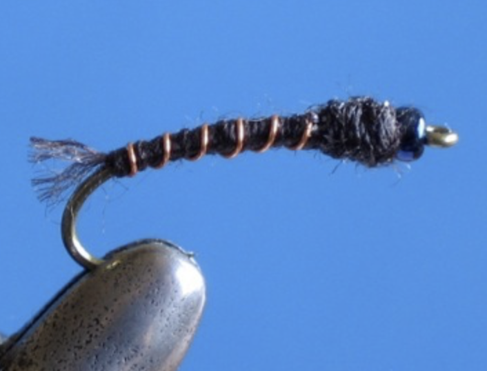

Tying the Plebby

Description
If you agree that the RS2 is a rather elegant looking fly, then the plebby is designed to be a plain companion in appearance. It is used as the upper fly, tied at least 20 inches above the RS2. Since the new fly proved to be very effective, Rim decided to name it plebby in the hope that it'd exalt the RS2.
A number of us using the plebby can confirm that it is a keeper...
Materials needed
- Hook: Tiemco 101, or 200R, or 2312 in sizes 16, 18, and 20
- Bead: Peacock colored (ex. Sprit River, Hi-Lite Glass Beads, Peacock, Small and Extra Small)
- Thread: Coates & Clark, Dual Duty Plus, 56B (Cloister Brown), or 54 (Seal Brown), or 373 (Charcoal)
- Copper wire for brown body; silver wire for grey body
Tying instructions
- Put bead on the hook.
- Start wrapping the thread right behind the bead. Tag end of thread needs to be long enough so that it extends (an inch or so) behind hook bend. It will be used to form a tail.
- Make a few wraps toward hook bend and secure copper (or silver) wire.
- Tag end of thread should be on top of the hook as you wrap the thread toward the bend.
- Once reaching the bend, wrap thread back evenly all the way to the bead.
- Rib with copper wire all the way back to the bead.
- Secure copper wire with thread.
- Build a bit of a thorax as you whip finish.
- Trim thread and cement.
- Cut tag end of thread so that it forms a 1/8 inch long tail.
- Fray tail with your bodkin.
You may copy content from this site unless it’s noted otherwise. However, borrowed content must reference this site as the source.
Questions and comments about the RS2 Home Page can be sent to Frank Horvath. I’ll reply as time allows.
Return to the main page by clicking here.